WEBINAR · 3 DIC · 19:00 H
Cómo convertir inversiones en tecnología en experiencias que las personas realmente adopten.
Cómo convertir inversiones en tecnología en experiencias que las personas realmente adopten.

La IA ya existía desde hacía años. Lo que cambió todo fue ponerla en una simple caja de texto: sin manual, sin entrenamiento y sin curva de aprendizaje.
“Por primera vez, cualquier persona podía conversar con un modelo complejo sin saber programar. La adopción explotó cuando desapareció la fricción.”

Es exactamente la misma capacidad tecnológica… pero una experiencia completamente distinta.
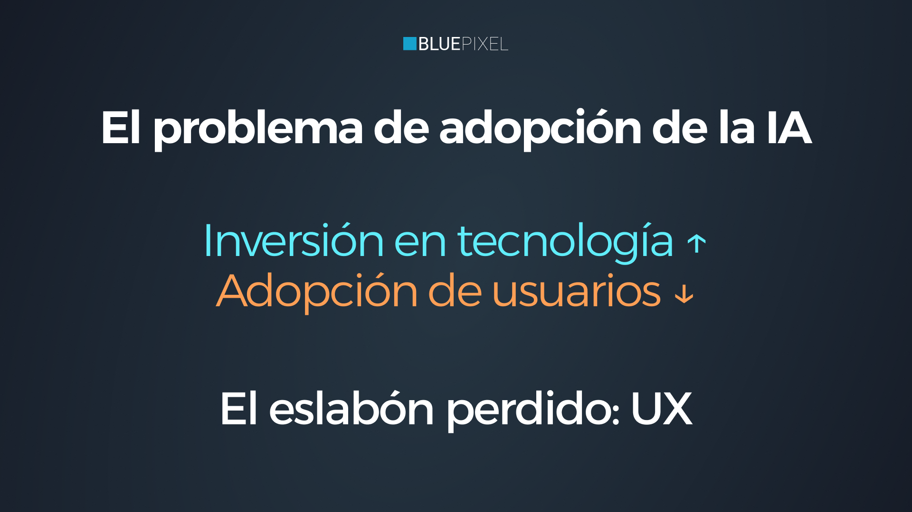
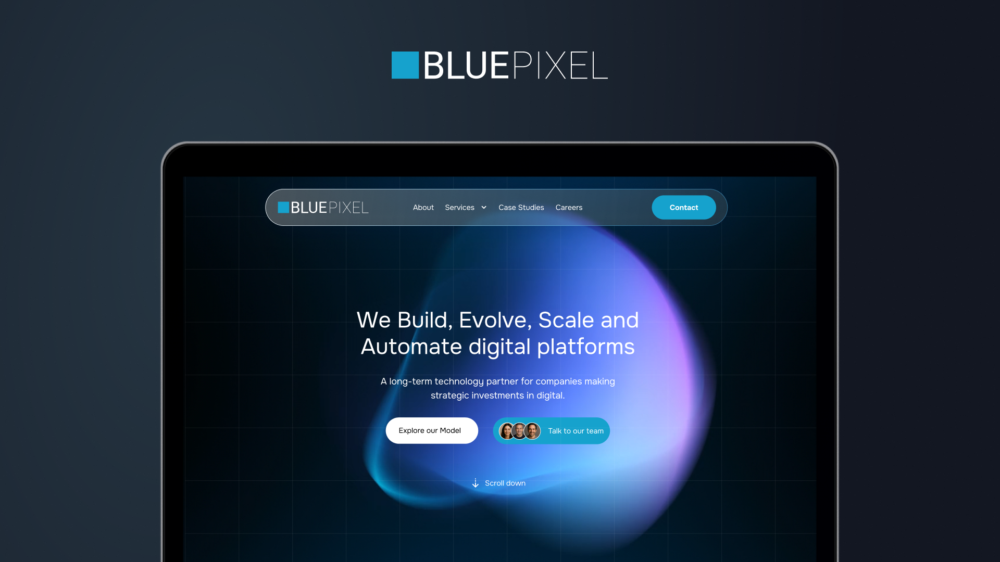
Lo que vemos hoy con la IA no es teoría: es el mismo patrón de adopción humana que hemos medido en la trinchera durante más de una década construyendo y escalando plataformas digitales.
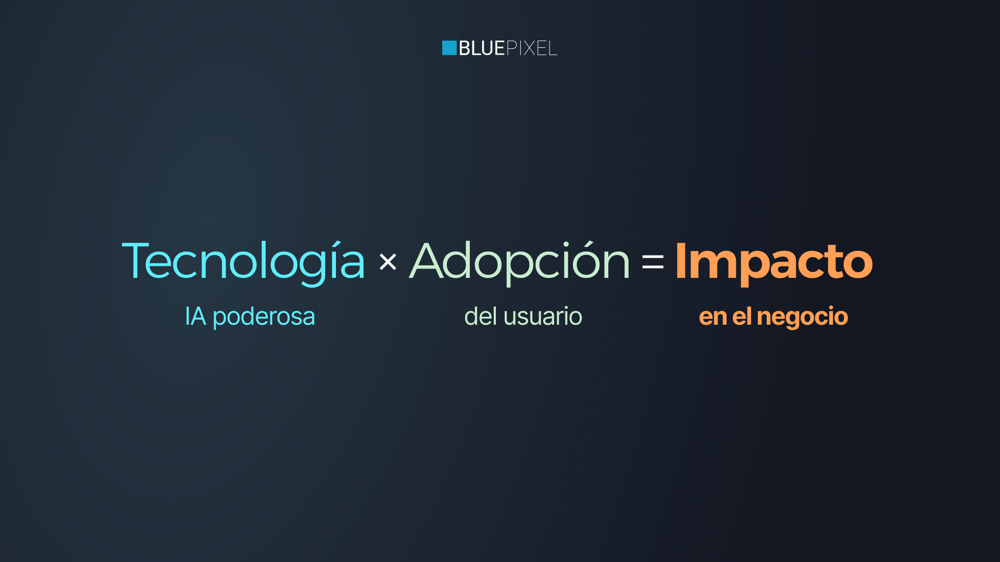
¿Automatiza una tarea que hoy causa dolor y horas perdidas, o es solo un feature decorativo que añade clics?
¿Vive dentro del software donde el equipo ya trabaja todos los días, o los obliga a ir a otra pestaña que olvidarán?
¿Ahorra tiempo operativo verificable o requiere más esfuerzo humano para supervisar y corregir a la máquina?
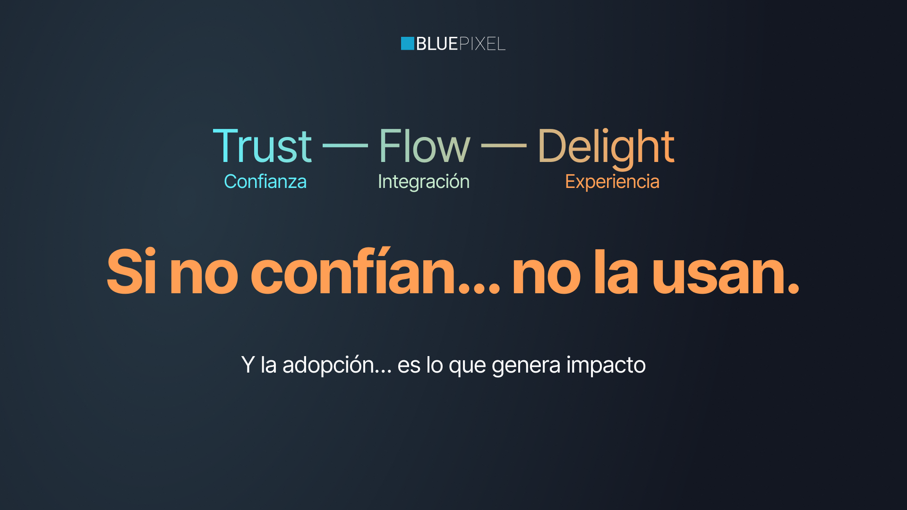
Si no entienden por qué la IA hizo lo que hizo, no confían. Y si no confían, no la usan.
La IA tiene que aparecer en el momento correcto… no obligarte a salir a buscarla a otro lado.
Usarla se tiene que sentir más fácil que no usarla. Si cuesta trabajo, se abandona.
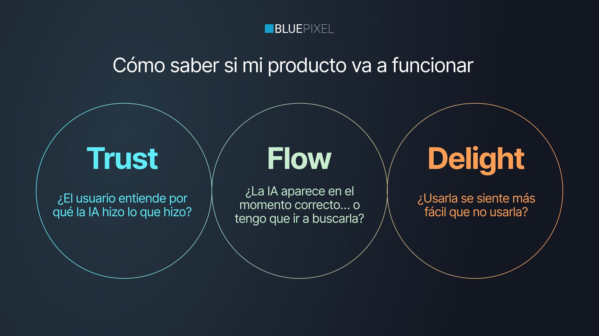
¿El usuario puede validar la fuente y siente que tiene el control final, o teme que la IA decida a ciegas?
¿Le ahorra clics dentro de su herramienta diaria o se convirtió en otra pestaña más que debe recordar abrir?
¿El valor es tan rápido y claro que volver al método anterior se siente primitivo y pesado?
El escudo biométrico o la fuente visible te confirma en un segundo que tu operación está protegida y bajo tu control.
Sin tokens físicos ni copiar códigos entre 3 aplicaciones: ocurre exactamente dentro de la pantalla que ya tienes abierta.
Lo que antes tomaba 4 minutos de fricción hoy toma 2 segundos. Eso es lo que convierte una función técnica en hábito diario.
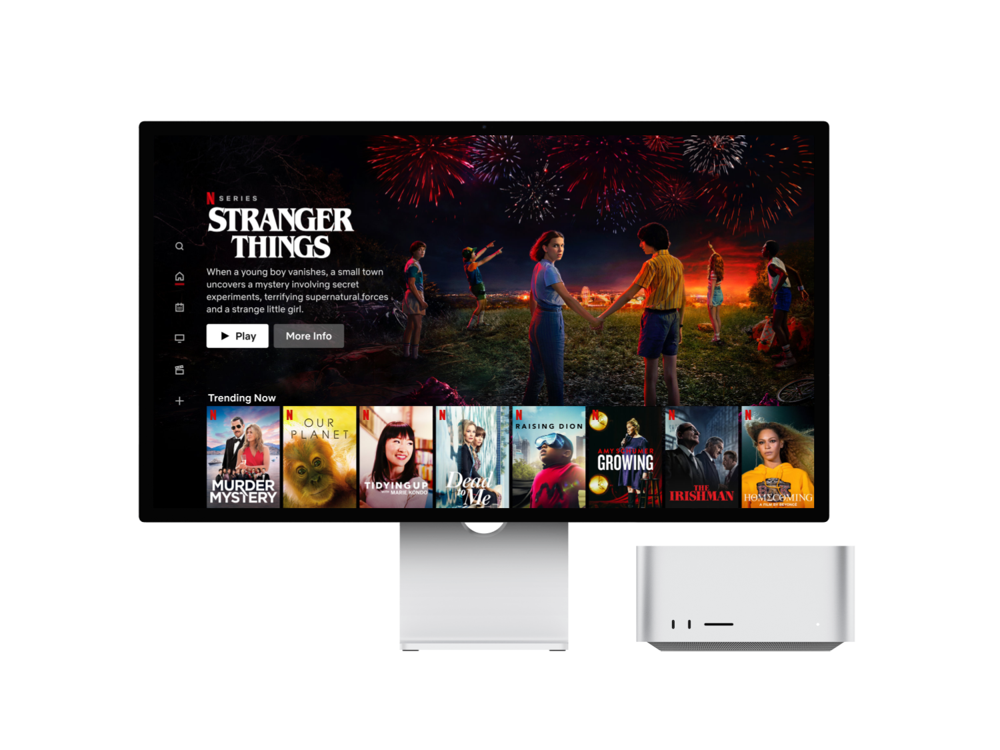
“No eliges el contenido… el contenido se adapta a ti. Cada persona ve portadas, orden y recomendaciones distintas.”
Antes había 1 interfaz fija para todos. Hoy hay millones de experiencias vivas dentro del mismo producto.
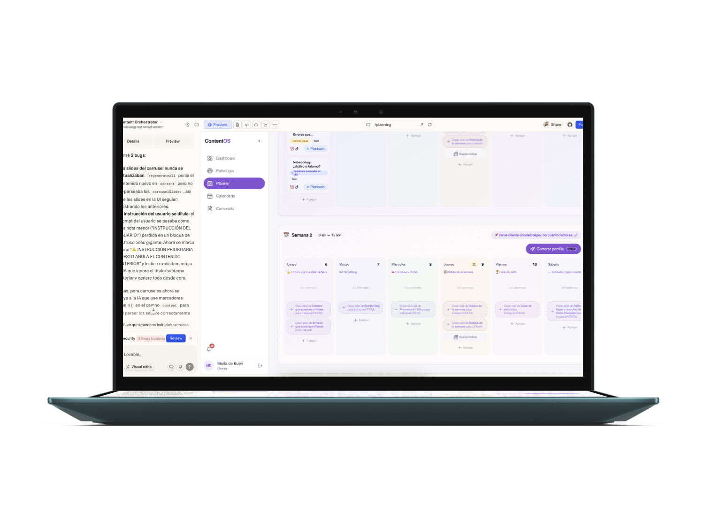
Escribes lo que necesitas en lenguaje natural y en minutos tienes un producto navegable. Lo revolucionario es la interfaz.
1. Prototipo funcional en días.
2. Prueba con usuarios sintéticos (IMPATH™).
3. Invertir en código solo con certeza.
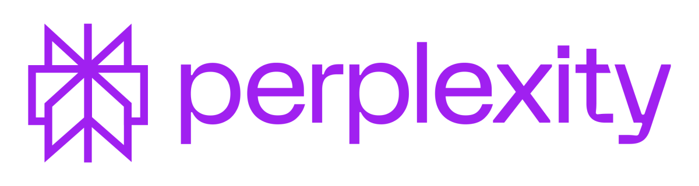
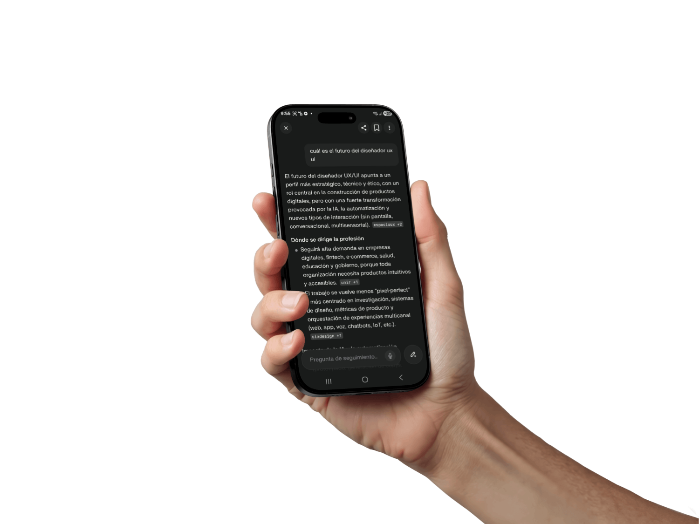
No ganó por tener un algoritmo más incomprensible. Ganó por ser súper clara: te responde y te muestra exactamente de dónde viene cada dato.
“No solo te da respuestas. Te da contexto. Porque en un mundo lleno de IA, la confianza es la base indispensable.”
En lugar de perdernos en veinte menús, pedimos lo que necesitamos en nuestro propio idioma.
Detecta lo que el cliente o el equipo va a necesitar antes de que aparezca el problema.
Cada persona ve exactamente la interfaz y las decisiones que necesita para hacer mejor su trabajo.
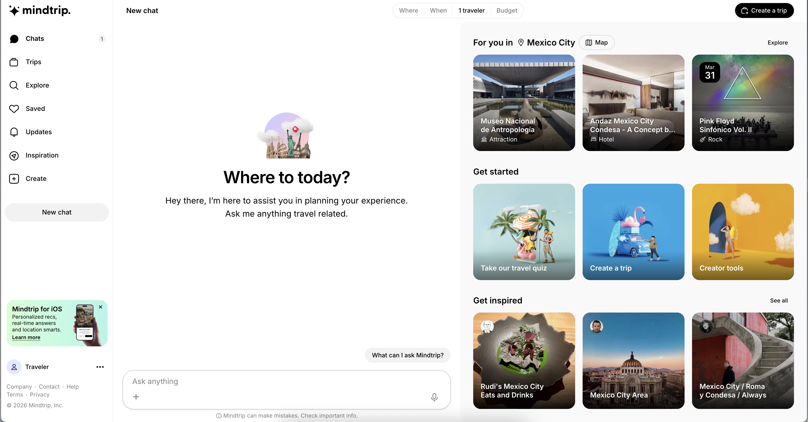
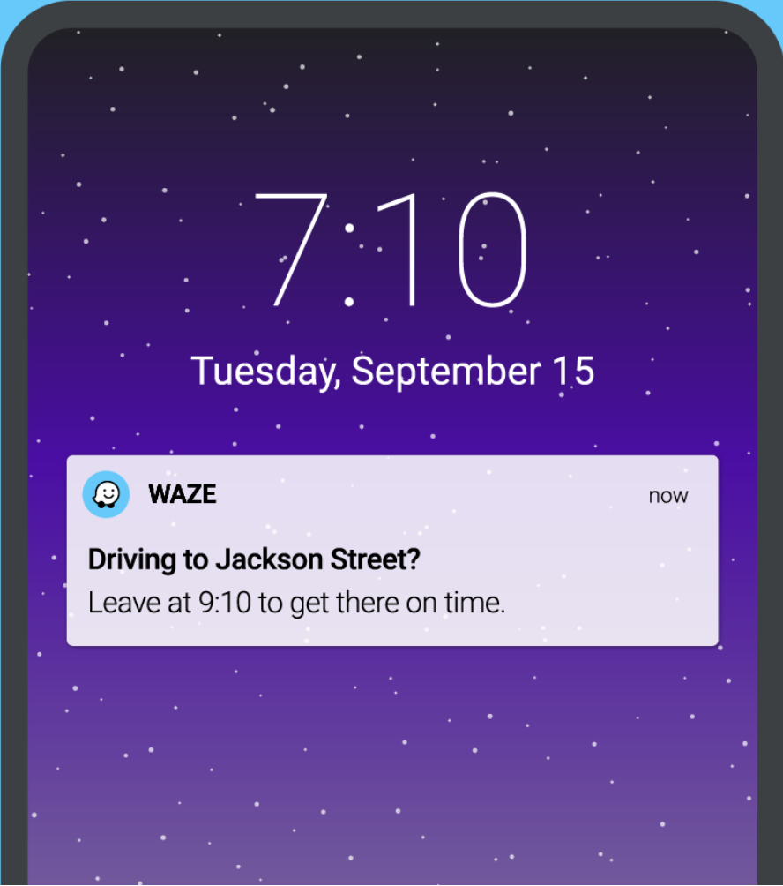
El usuario no tuvo que abrir la app ni buscar la ruta. El sistema cruzó su calendario con el tráfico en vivo y le avisó a qué hora salir.
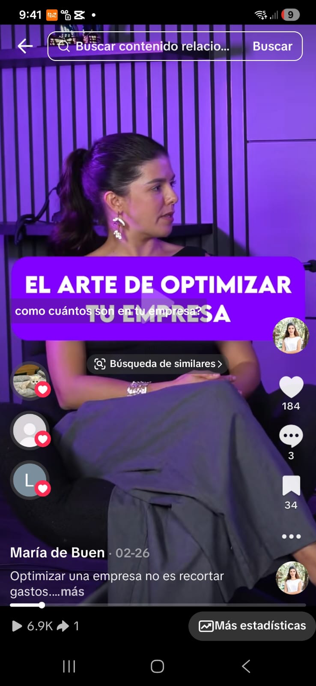
Ya no diseñamos pantallas estáticas. Diseñamos cómo un sistema entiende el contexto de cada persona y le entrega valor inmediato sin fricción.
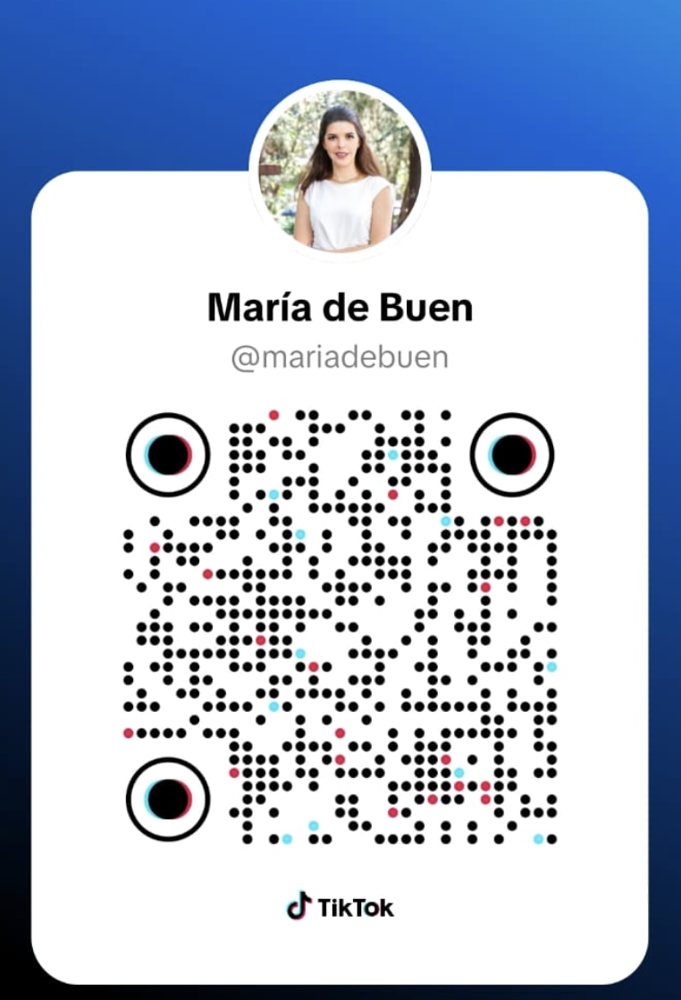
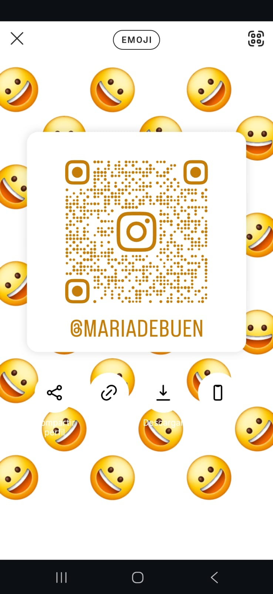